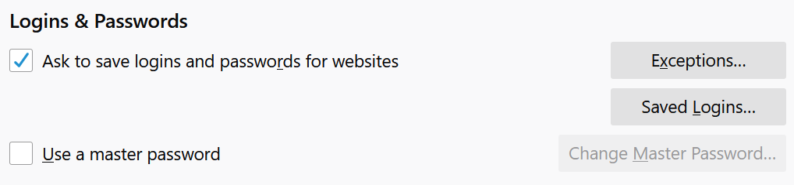

Thanks for downloading the Mooltipass Extension
For this extension to work correctly, you must disable all other password management applications. That way, nothing will interfere with the Mooltipass Extension.
To disable other password management extensions on Firefox follow these instructions.
Part 1: Disabling 3rd Party Password Managers
Step 1:
Click the menu icon (☰) on the top right corner of the browser. On the drop down menu that appears, choose "Add-ons". Alternatively, press Ctrl+Shift+A to enter the addon menu. After you have entered the addon menu, select Extensions from the side menu.
Here you should be able to see all of the Firefox add-ons you have installed. If not, try repeating Step 1 again and see if you yield different results.
Step 2:
Find any other password managing applications, such as Dashlane or Lastpass. You need to remove these extensions from your computer. These extensions are displayed in rectangles such as the one below:
 Step 3:
Finally, remove the extension by pressing the "Remove" button.
Be sure to repeat these steps for all other password extensions.
Part 2: Disabling Firefox's Password Manager
You might have noticed that the Firefox browser asks you if you would like to store credentials for a website, even if you have not installed any management extensions. These credentials are autofilled into corresponding login fields on a website, which can cause the Mooltipass extension to perform undesirably.
Step 1:
Click the menu icon (☰) on the top right corner of the browser. On the drop down menu that appears, choose "Options".
Step 2:
In the options page of Firefox, choose the Privacy and Security tab from the side menu. Then, scroll down until you find the section labeled Logins & Passwords. It looks like this:
Step 3:
Finally, remove the extension by pressing the "Remove" button.
Be sure to repeat these steps for all other password extensions.
Part 2: Disabling Firefox's Password Manager
You might have noticed that the Firefox browser asks you if you would like to store credentials for a website, even if you have not installed any management extensions. These credentials are autofilled into corresponding login fields on a website, which can cause the Mooltipass extension to perform undesirably.
Step 1:
Click the menu icon (☰) on the top right corner of the browser. On the drop down menu that appears, choose "Options".
Step 2:
In the options page of Firefox, choose the Privacy and Security tab from the side menu. Then, scroll down until you find the section labeled Logins & Passwords. It looks like this:

Step 3:
Uncheck the checkbox for "Ask to save logins and passwords for websites". Congratulations, you have successfully set up the Mooltipass Extension!